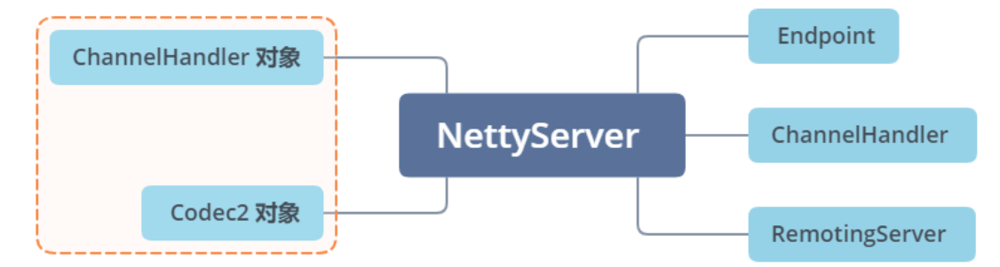

透彻理解Apache Dubbo（十）——dubbo-remoting模块：Transport层的Server核心实现
我在《透彻理解Apache Dubbo（八）——dubbo-remoting模块：核心接口》中，对dubbo-remoting 模块的整体结构及核心接口进行过介绍。Remoting 层，包括了 Exchange、Transport和 Serialize 三个子层。本章，我就来对Transport子层中的核心接口的实现进行分析。

一、AbstractPeer
我们首先来看AbstractPeer这个抽象类，它同时实现了 Endpoint 接口和 ChannelHandler 接口，是 AbstractChannel、AbstractEndpoint 抽象类的父类。

1.1 核心字段
AbstractPeer 中有四个字段：
public abstract class AbstractPeer implements Endpoint, ChannelHandler {
// 内部的ChannelHandler对象，AbstractPeer对ChannelHandler接口的所有实现，都委托给了该对象
private final ChannelHandler handler;
// 表示该端点自身的URL
private volatile URL url;
// 记录当前端点的状态
private volatile boolean closing;
// 记录当前端点的状态
private volatile boolean closed;
}
二、AbstractEndpoint
AbstractEndpoint 继承了 AbstractPeer 抽象类，它是AbstractClient和AbstractServer的父类：
2.1 核心字段
它的内部维护了一个 Codec2 对象和两个超时时间（timeout 字段和 connectTimeout 字段），AbstractEndpoint 的构造方法根据传入的 URL 来初始化这三个字段：
public abstract class AbstractEndpoint extends AbstractPeer implements Resetable {
private Codec2 codec;
private int timeout;
private int connectTimeout;
public AbstractEndpoint(URL url, ChannelHandler handler) {
super(url, handler);
// 根据URL中的codec参数值，确定具体的Codec2实现类
this.codec = getChannelCodec(url);
// 根据URL中的timeout参数，确定timeout字段值，默认1000
this.timeout = url.getPositiveParameter(TIMEOUT_KEY, DEFAULT_TIMEOUT);
// 根据URL中的connect.timeout参数，确定connectTimeout字段值，默认3000
this.connectTimeout = url.getPositiveParameter(Constants.CONNECT_TIMEOUT_KEY, Constants.DEFAULT_CONNECT_TIMEOUT);
}
//...
}
Codec2是一个SPI扩展点，上述的AbstractEndpoint.getChannelCodec() 方法就是基于 Dubbo SPI 选择其扩展实现的：
// AbstractEndpoint.java
protected static Codec2 getChannelCodec(URL url) {
// 根据URL的codec参数获取扩展名
String codecName = url.getParameter(Constants.CODEC_KEY, "telnet");
if (ExtensionLoader.getExtensionLoader(Codec2.class).hasExtension(codecName)) {
return ExtensionLoader.getExtensionLoader(Codec2.class).getExtension(codecName);
} else {
// Codec2接口不存在相应的扩展名，就尝试从Codec这个老接口的扩展名中查找，目前Codec接口已经废弃
return new CodecAdapter(ExtensionLoader.getExtensionLoader(Codec.class)
.getExtension(codecName));
}
}
另外，AbstractEndpoint 还实现了 Resetable 接口（只有一个 reset() 方法），AbstractEndpoint 的 reset() 方法逻辑非常简单，就是根据传入的 URL 参数重置 AbstractEndpoint 的三个字段：
// AbstractEndpoint.java
public void reset(URL url) {
// 检测当前AbstractEndpoint是否已经关闭(略)
if (isClosed()) {
throw new IllegalStateException("Failed to reset parameters "
+ url + ", cause: Channel closed. channel: " + getLocalAddress());
}
// 重置timeout
try {
if (url.hasParameter(TIMEOUT_KEY)) {
int t = url.getParameter(TIMEOUT_KEY, 0);
if (t > 0) {
this.timeout = t;
}
}
} catch (Throwable t) {
logger.error(t.getMessage(), t);
}
// 重置connectTimeout
try {
if (url.hasParameter(Constants.CONNECT_TIMEOUT_KEY)) {
int t = url.getParameter(Constants.CONNECT_TIMEOUT_KEY, 0);
if (t > 0) {
this.connectTimeout = t;
}
}
} catch (Throwable t) {
logger.error(t.getMessage(), t);
}
try {
if (url.hasParameter(Constants.CODEC_KEY)) {
this.codec = getChannelCodec(url);
}
} catch (Throwable t) {
logger.error(t.getMessage(), t);
}
}
三、AbstractChannel
AbstractChannel 也继承了 AbstractPeer 抽象类，同时还继承了 Channel 接口：

AbstractChannel 的实现非常简单，只是在 send() 方法中检测底层连接的状态，没有实现具体发送消息的逻辑：
public abstract class AbstractChannel extends AbstractPeer implements Channel {
public AbstractChannel(URL url, ChannelHandler handler) {
super(url, handler);
}
@Override
public void send(Object message, boolean sent) throws RemotingException {
if (isClosed()) {
// ...抛出异常
}
}
}
3.1 NettyChannel
这里我以 Netty 4 的实现—— NettyChannel 为例，分析它对 AbstractChannel 的实现：
final class NettyChannel extends AbstractChannel {
// Netty Channel 与 Dubbo Channel 对象一一对应
private static final ConcurrentMap<Channel, NettyChannel> CHANNEL_MAP = new ConcurrentHashMap<Channel, NettyChannel>();
// 底层的Netty Channel
private final Channel channel;
// 当前 Channel 中的附加属性，都会记录到该 Map 中
private final Map<String, Object> attributes = new ConcurrentHashMap<String, Object>();
// 标识当前 Channel 是否可用
private final AtomicBoolean active = new AtomicBoolean(false);
public void send(Object message, boolean sent) throws RemotingException {
// 调用AbstractChannel的send()方法，检测连接是否可用
super.send(message, sent);
boolean success = true;
int timeout = 0;
try {
// 依赖Netty框架的Channel发送数据
ChannelFuture future = channel.writeAndFlush(message);
if (sent) { // 等待发送结束，有超时时间
timeout = getUrl().getPositiveParameter(TIMEOUT_KEY, DEFAULT_TIMEOUT);
success = future.await(timeout);
}
// 异常
Throwable cause = future.cause();
if (cause != null) {
throw cause;
}
} catch (Throwable e) {
// 在底层连接断开时，删除缓存的底层Channel
removeChannelIfDisconnected(channel);
throw new RemotingException(this, "Failed to send message " + PayloadDropper.getRequestWithoutData(message) + " to " + getRemoteAddress() + ", cause: " + e.getMessage(), e);
}
if (!success) {
throw new RemotingException(this, "Failed to send message " + PayloadDropper.getRequestWithoutData(message) + " to " + getRemoteAddress() + "in timeout(" + timeout + "ms) limit");
}
}
}
四、AbstractServer
AbstractServer 是对服务端的抽象，实现了服务端的公共逻辑。它继承了 AbstractEndpoint 抽象类，同时还实现了 RemotingServer 接口，如下图所示：

4.1 核心字段
AbstractServer 的核心字段：
public abstract class AbstractServer extends AbstractEndpoint implements RemotingServer {
// Server的本地地址
private InetSocketAddress localAddress;
// Server的绑定地址
private InetSocketAddress bindAddress;
// Server能接收的最大连接数，从URL的 accepts 参数中获取，默认值0，表示没有限制
private int accepts;
// 连接空闲时间
private int idleTimeout;
// 负责管理线程池，ExecutorRepository是一个SPI扩展点
private ExecutorRepository executorRepository = ExtensionLoader.getExtensionLoader(ExecutorRepository.class).getDefaultExtension();
// 当前Server关联的线程池，由ExecutorRepository创建并管理
ExecutorService executor;
protected static final String SERVER_THREAD_POOL_NAME = "DubboServerHandler";
}
在 AbstractServer 的构造方法中，会根据传入的 URL初始化上述字段，并调用 doOpen() 这个抽象方法完成 Server 的启动：
// AbstractServer.java
public AbstractServer(URL url, ChannelHandler handler) throws RemotingException {
super(url, handler);
localAddress = getUrl().toInetSocketAddress();
String bindIp = getUrl().getParameter(Constants.BIND_IP_KEY, getUrl().getHost());
int bindPort = getUrl().getParameter(Constants.BIND_PORT_KEY, getUrl().getPort());
if (url.getParameter(ANYHOST_KEY, false) || NetUtils.isInvalidLocalHost(bindIp)) {
bindIp = ANYHOST_VALUE;
}
bindAddress = new InetSocketAddress(bindIp, bindPort);
this.accepts = url.getParameter(ACCEPTS_KEY, DEFAULT_ACCEPTS);
this.idleTimeout = url.getParameter(IDLE_TIMEOUT_KEY, DEFAULT_IDLE_TIMEOUT);
try {
// 启动Server，抽象方法，由子类实现
doOpen();
} catch (Throwable t) {
throw new RemotingException(url.toInetSocketAddress(), null, "Failed to bind " + getClass().getSimpleName() + " on " + getLocalAddress() + ", cause: " + t.getMessage(), t);
}
// 获取该Server关联的线程池
executor = executorRepository.createExecutorIfAbsent(url);
}
4.2 Server启停
以NettyServer为例，我们来看看doOpen方法，其实就是基于Netty API完成Server的启动：
// NettyServer.java
public class NettyServer extends AbstractServer {
private Map<String, Channel> channels;
private ServerBootstrap bootstrap;
private io.netty.channel.Channel channel;
private EventLoopGroup bossGroup;
private EventLoopGroup workerGroup;
protected void doOpen() throws Throwable {
// 创建ServerBootstrap
bootstrap = new ServerBootstrap();
// 创建boss EventLoopGroup
bossGroup = NettyEventLoopFactory.eventLoopGroup(1, "NettyServerBoss");
// 创建worker EventLoopGroup
workerGroup = NettyEventLoopFactory.eventLoopGroup(
getUrl().getPositiveParameter(IO_THREADS_KEY, Constants.DEFAULT_IO_THREADS),
"NettyServerWorker");
// 创建NettyServerHandler，它是一个Netty中的ChannelHandler实现
// 注意这里将NettyServer作为Dubbo ChannelHandler
final NettyServerHandler nettyServerHandler = new NettyServerHandler(getUrl(), this);
// 获取当前NettyServer创建的所有Netty Channel
channels = nettyServerHandler.getChannels();
// 初始化ServerBootstrap
bootstrap.group(bossGroup, workerGroup)
.channel(NettyEventLoopFactory.serverSocketChannelClass())
.option(ChannelOption.SO_REUSEADDR, Boolean.TRUE)
.childOption(ChannelOption.TCP_NODELAY, Boolean.TRUE)
.childOption(ChannelOption.ALLOCATOR, PooledByteBufAllocator.DEFAULT)
.childHandler(new ChannelInitializer<SocketChannel>() {
@Override
protected void initChannel(SocketChannel ch) throws Exception {
// 连接空闲超时时间
int idleTimeout = UrlUtils.getIdleTimeout(getUrl());
// NettyCodecAdapter中会创建Decoder和Encoder
NettyCodecAdapter adapter = new NettyCodecAdapter(getCodec(), getUrl(), NettyServer.this);
if (getUrl().getParameter(SSL_ENABLED_KEY, false)) {
ch.pipeline().addLast("negotiation",
SslHandlerInitializer.sslServerHandler(getUrl(), nettyServerHandler));
}
ch.pipeline()
// 注册Decoder
.addLast("decoder", adapter.getDecoder())
// 注册Encoder
.addLast("encoder", adapter.getEncoder())
// 注册IdleStateHandler，用于心跳和空闲长连接处理
.addLast("server-idle-handler", new IdleStateHandler(0, 0, idleTimeout, MILLISECONDS))
// 注册NettyServerHandler
.addLast("handler", nettyServerHandler);
}
});
// 绑定本地Server地址并启动
ChannelFuture channelFuture = bootstrap.bind(getBindAddress());
channelFuture.syncUninterruptibly();
channel = channelFuture.channel();
}
}
上述Server的启动过程中，关键是在Netty Channel中注册的四个ChannelHandler：

我来逐个讲解下这四个 ChannelHandler 的核心功能。
InternalEncoder
InternalEncoder，是 NettyCodecAdapter 的内部类，它继承了 Netty 中的 MessageToByteEncoder。InternalEncoder 会将真正的编码功能委托给 NettyServer 内部的 Codec2 对象去处理：
// NettyCodecAdapter.InternalEncoder.java
private class InternalEncoder extends MessageToByteEncoder {
@Override
protected void encode(ChannelHandlerContext ctx, Object msg, ByteBuf out) throws Exception {
// 将Netty ByteBuf封装成统一的ChannelBuffer
org.apache.dubbo.remoting.buffer.ChannelBuffer buffer = new NettyBackedChannelBuffer(out);
// 拿到关联的Netty Channel
Channel ch = ctx.channel();
NettyChannel channel = NettyChannel.getOrAddChannel(ch, url, handler);
// 编码
codec.encode(channel, buffer, msg);
}
}
InternalDecoder
InternalDecoder，也是 NettyCodecAdapter 的内部类，它继承了 Netty 中的 ByteToMessageDecoder。InternalDecoder 会将真正的解码功能委托给 NettyServer 内部的 Codec2 对象去处理：
private class InternalDecoder extends ByteToMessageDecoder {
@Override
protected void decode(ChannelHandlerContext ctx, ByteBuf input, List<Object> out) throws Exception {
// 将Netty ByteBuf封装成统一的ChannelBuffer
ChannelBuffer message = new NettyBackedChannelBuffer(input);
// 拿到关联的Netty Channel
NettyChannel channel = NettyChannel.getOrAddChannel(ctx.channel(), url, handler);
do {
// 记录当前readerIndex的位置
int saveReaderIndex = message.readerIndex();
// 委托给Codec2进行解码
Object msg = codec.decode(channel, message);
// 当前接收到的数据不足一个消息的长度，会返回NEED_MORE_INPUT
if (msg == Codec2.DecodeResult.NEED_MORE_INPUT) {
// 重置readerIndex
message.readerIndex(saveReaderIndex);
break;
} else {
if (saveReaderIndex == message.readerIndex()) {
throw new IOException("Decode without read data.");
}
// 将读取到的消息传递给后面的Handler处理
if (msg != null) {
out.add(msg);
}
}
} while (message.readable());
}
}
IdleStateHandler
IdleStateHandler，是 Netty 提供的一个工具 ChannelHandler，用于定时心跳以及关闭空闲长连接，源码我就不赘述了，读者可以参考我的专栏《透彻理解Java网络编程》。我这里简单介绍下IdleStateHandler的工作流程：
- 首先，IdleStateHandler 会通过
lastReadTime、lastWriteTime等几个字段，记录了最近一次读/写事件的时间； - IdleStateHandler 初始化时，会创建一个定时任务，定时检测当前时间与最后一次读/写时间的差值，如果超过我们设置的阈值（也就是上面 AbstractServer 中设置的
idleTimeout），就会触发 IdleStateEvent 事件； - IdleStateEvent 事件会根据Netty Channel传播链，传递给后续的 ChannelHandler 进行处理，后续 ChannelHandler 的
userEventTriggered()方法会根据接收到的 IdleStateEvent 事件，决定是关闭空闲长连接，还是发送心跳探活。
NettyServerHandler
最后来看NettyServerHandler，它继承了Netty中的 ChannelDuplexHandler，也就是说可以同时处理 Inbound 数据和 Outbound 数据。在 NettyServerHandler 中有 channels 和 handler 两个核心字段：
@io.netty.channel.ChannelHandler.Sharable
public class NettyServerHandler extends ChannelDuplexHandler {
// 保存了当前Server创建的所有 Channel
private final Map<String, Channel> channels = new ConcurrentHashMap<String, Channel>();
// 这个handler就是NettyServer
// NettyServerHandler中的几乎所有方法都会触发该对象的方法执行
private final ChannelHandler handler;
public NettyServerHandler(URL url, ChannelHandler handler) {
if (url == null) {
throw new IllegalArgumentException("url == null");
}
if (handler == null) {
throw new IllegalArgumentException("handler == null");
}
this.url = url;
// handler是在NettyServer.doOpen()方法中创建的
this.handler = handler;
}
//...
}
我这里以 write() 方法为例，对NettyServerHandler的处理流程进行简单分析：
// NettyServerHandler.java
public void write(ChannelHandlerContext ctx, Object msg, ChannelPromise promise) throws Exception {
// 将发送的数据继续向下传递
super.write(ctx, msg, promise);
NettyChannel channel = NettyChannel.getOrAddChannel(ctx.channel(), url, handler);
handler.sent(channel, msg);
}
从 AbstractPeer 开始往下，一路继承下来，NettyServer 拥有了 Endpoint、ChannelHandler 以及RemotingServer多个接口的能力，关联了一个 ChannelHandler 对象以及 Codec2 对象，并最终将数据委托给这两个对象进行处理。

4.3 ExecutorRepository
AbstractServer中有一个ExecutorRepository类，它负责创建并管理 Dubbo 中的线程池，该接口虽然是个 SPI 扩展点，但是只有一个默认实现—— DefaultExecutorRepository：
@SPI("default")
public interface ExecutorRepository {
// 根据 URL 参数，创建相应的线程池
ExecutorService createExecutorIfAbsent(URL url);
// 根据 URL 参数，查询相应的线程池
ExecutorService getExecutor(URL url);
// 根据 URL 参数，更新线程池的属性，比如coreSize, maxSize, ...
void updateThreadpool(URL url, ExecutorService executor);
// 获取调度线程池
ScheduledExecutorService nextScheduledExecutor();
// 获取调度线程池
ScheduledExecutorService getServiceExporterExecutor();
// 获取默认的共享线程池
ExecutorService getSharedExecutor();
}
DefaultExecutorRepository中维护了一个 ConcurrentMap<String, ConcurrentMap<Integer, ExecutorService>> 集合，缓存了已有的线程池：
- 第一层 Key 值：表示线程池属于 Provider 端还是 Consumer 端；
- 第二层 Key 值：表示线程池关联服务的端口。
public class DefaultExecutorRepository implements ExecutorRepository {
// 根据CPU核数，计算默认的线程数
private int DEFAULT_SCHEDULER_SIZE = Runtime.getRuntime().availableProcessors();
private final ExecutorService SHARED_EXECUTOR = Executors.newCachedThreadPool(new NamedThreadFactory("DubboSharedHandler", true));
private Ring<ScheduledExecutorService> scheduledExecutors = new Ring<>();
private ScheduledExecutorService serviceExporterExecutor;
private ScheduledExecutorService reconnectScheduledExecutor;
// 缓存已有的线程池
private ConcurrentMap<String, ConcurrentMap<Integer, ExecutorService>> data = new ConcurrentHashMap<>();
//...
}
DefaultExecutorRepository.createExecutorIfAbsent() 方法会根据 URL 参数，创建相应的线程池并缓存在合适的位置：
// DefaultExecutorRepository.java
public synchronized ExecutorService createExecutorIfAbsent(URL url) {
// 根据URL中的side参数值决定第一层key，即判断是Consumer还是Provider
String componentKey = EXECUTOR_SERVICE_COMPONENT_KEY;
if (CONSUMER_SIDE.equalsIgnoreCase(url.getParameter(SIDE_KEY))) {
componentKey = CONSUMER_SIDE;
}
Map<Integer, ExecutorService> executors = data.computeIfAbsent(componentKey, k -> new ConcurrentHashMap<>());
// 根据URL中的port值确定第二层key
Integer portKey = url.getPort();
ExecutorService executor = executors.computeIfAbsent(portKey, k -> createExecutor(url));
// 如果缓存中相应的线程池已关闭，则同样需要调用createExecutor()方法创建新的线程池，并替换掉缓存中已关闭的线程持
if (executor.isShutdown() || executor.isTerminated()) {
executors.remove(portKey);
executor = createExecutor(url);
executors.put(portKey, executor);
}
return executor;
}
4.4 ThreadPool
在上述的 DefaultExecutorRepository.createExecutor() 方法中，会通过 Dubbo SPI 查找 ThreadPool 接口的扩展实现，并调用其 getExecutor() 方法创建线程池：
// DefaultExecutorRepository.java
private ExecutorService createExecutor(URL url) {
return (ExecutorService) ExtensionLoader.getExtensionLoader(ThreadPool.class).getAdaptiveExtension().getExecutor(url);
}
ThreadPool 接口被 @SPI 注解修饰，默认使用 FixedThreadPool 实现。同时，ThreadPool 接口中的 getExecutor() 方法被 @Adaptive 注解修饰，动态生成的适配器类会优先根据 URL 中的 threadpool 参数选择 ThreadPool 的扩展实现：
@SPI("fixed")
public interface ThreadPool {
@Adaptive({THREADPOOL_KEY})
Executor getExecutor(URL url);
}
ThreadPool 有很多实现类，如下图，不同实现会根据 URL 参数创建不同特性的线程池：

以CacheThreadPool为例：
public class CachedThreadPool implements ThreadPool {
@Override
public Executor getExecutor(URL url) {
String name = url.getParameter(THREAD_NAME_KEY, DEFAULT_THREAD_NAME);
// 核心线程数
int cores = url.getParameter(CORE_THREADS_KEY, DEFAULT_CORE_THREADS);
// 最大线程数
int threads = url.getParameter(THREADS_KEY, Integer.MAX_VALUE);
// 队列深度
int queues = url.getParameter(QUEUES_KEY, DEFAULT_QUEUES);
// 非核心线程的最大空闲时长，当非核心线程空闲时间超过该值时，会被回收
int alive = url.getParameter(ALIVE_KEY, DEFAULT_ALIVE);、
// 创建线程池
return new ThreadPoolExecutor(cores, threads, alive, TimeUnit.MILLISECONDS,
queues == 0 ? new SynchronousQueue<Runnable>() :
(queues < 0 ? new LinkedBlockingQueue<Runnable>()
: new LinkedBlockingQueue<Runnable>(queues)),
new NamedInternalThreadFactory(name, true), new AbortPolicyWithReport(name, url));
}
}
在 ThreadPool 的子类中，LimitedThreadPool、FixedThreadPool、CacheThreadPool均基于 JDK ThreadPoolExecutor 线程池实现，在核心线程全部被占用时，会优先将任务放到缓冲队列中缓存，在缓冲队列满了之后，才会尝试创建新线程来处理任务。
最特殊的是EagerThreadPool，底层是一个EagerThreadPoolExecutor线程池，它是Dubbo自己实现的一个特殊线程池（继承了ThreadPoolExecutor）：
public class EagerThreadPool implements ThreadPool {
@Override
public Executor getExecutor(URL url) {
String name = url.getParameter(THREAD_NAME_KEY, DEFAULT_THREAD_NAME);
int cores = url.getParameter(CORE_THREADS_KEY, DEFAULT_CORE_THREADS);
int threads = url.getParameter(THREADS_KEY, Integer.MAX_VALUE);
int queues = url.getParameter(QUEUES_KEY, DEFAULT_QUEUES);
int alive = url.getParameter(ALIVE_KEY, DEFAULT_ALIVE);
// TaskQueue继承自LinkedBlockingQueue
TaskQueue<Runnable> taskQueue = new TaskQueue<Runnable>(queues <= 0 ? 1 : queues);
EagerThreadPoolExecutor executor = new EagerThreadPoolExecutor(cores,
threads,
alive,
TimeUnit.MILLISECONDS,
taskQueue,
new NamedInternalThreadFactory(name, true),
new AbortPolicyWithReport(name, url));
taskQueue.setExecutor(executor);
return executor;
}
}
EagerThreadPoolExecutor的特点是：在线程数没有达到最大线程数的前提下，EagerThreadPoolExecutor 会优先创建线程来执行任务，而不是放到缓冲队列中；当线程数达到最大值时，EagerThreadPoolExecutor 会将任务放入缓冲队列，等待空闲线程。
EagerThreadPoolExecutor 覆盖了 ThreadPoolExecutor 中的两个方法：execute() 方法和 afterExecute() 方法，具体实现如下：
public class EagerThreadPoolExecutor extends ThreadPoolExecutor {
// 当前在线程池中的任务总数：正在线执行的任务数 + 缓冲队列中等待的任务数
private final AtomicInteger submittedTaskCount = new AtomicInteger(0);
public EagerThreadPoolExecutor(int corePoolSize,
int maximumPoolSize,
long keepAliveTime,
TimeUnit unit, TaskQueue<Runnable> workQueue,
ThreadFactory threadFactory,
RejectedExecutionHandler handler) {
super(corePoolSize, maximumPoolSize, keepAliveTime, unit, workQueue, threadFactory, handler);
}
@Override
protected void afterExecute(Runnable r, Throwable t) {
// 任务执行结束，递减submittedTaskCount
submittedTaskCount.decrementAndGet();
}
@Override
public void execute(Runnable command) {
if (command == null) {
throw new NullPointerException();
}
// 任务提交前，递增submittedTaskCount
submittedTaskCount.incrementAndGet();
try {
// 提交任务
super.execute(command);
} catch (RejectedExecutionException rx) { // 任务被拒绝
final TaskQueue queue = (TaskQueue) super.getQueue();
try {
// 尝试再次放入队列中缓存，等待空闲线程执行
if (!queue.retryOffer(command, 0, TimeUnit.MILLISECONDS)) {
// 再次入队被拒绝，则队列已满，无法执行任务
submittedTaskCount.decrementAndGet();
throw new RejectedExecutionException("Queue capacity is full.", rx);
}
} catch (InterruptedException x) { // 再次入队列异常
submittedTaskCount.decrementAndGet();
throw new RejectedExecutionException(x);
}
} catch (Throwable t) { // 任务提交异常
submittedTaskCount.decrementAndGet();
throw t;
}
}
}
优先创建线程执行任务的逻辑其实是包含在TaskQueue中，它覆写了 LinkedBlockingQueue.offer() 方法，会判断线程池的 submittedTaskCount 值是否已经达到最大线程数，如果未超过，则会返回 false，迫使线程池创建新线程来执行任务：
public class TaskQueue<R extends Runnable> extends LinkedBlockingQueue<Runnable> {
private EagerThreadPoolExecutor executor;
@Override
public boolean offer(Runnable runnable) {
if (executor == null) {
throw new RejectedExecutionException("The task queue does not have executor!");
}
// 获取当前线程池中的活跃线程数
int currentPoolThreadSize = executor.getPoolSize();
// 有线程空闲，直接将任务提交到队列中，空闲线程会直接从队列中获取任务执行
if (executor.getSubmittedTaskCount() < currentPoolThreadSize) {
return super.offer(runnable);
}
// 没有空闲线程，但还可以创建新线程，则返回false，迫使线程池创建新线程来执行任务
if (currentPoolThreadSize < executor.getMaximumPoolSize()) {
return false;
}
// 当前线程数已经达到上限，只能放到队列中缓存了
return super.offer(runnable);
}
}
EagerThreadPoolExecutor线程池最后一个相关的小细节是 AbortPolicyWithReport ，它继承了 ThreadPoolExecutor.AbortPolicy，覆写的 rejectedExecution 方法会输出包含线程池相关信息的 WARN 级别日志，然后执行 dumpJStack() 方法输出堆栈信息，最后再抛出RejectedExecutionException 异常：
// AbortPolicyWithReport.java
public void rejectedExecution(Runnable r, ThreadPoolExecutor e) {
String msg = String.format("Thread pool is EXHAUSTED!" +
" Thread Name: %s, Pool Size: %d (active: %d, core: %d, max: %d, largest: %d), Task: %d (completed: "
+ "%d)," +
" Executor status:(isShutdown:%s, isTerminated:%s, isTerminating:%s), in %s://%s:%d!",
threadName, e.getPoolSize(), e.getActiveCount(), e.getCorePoolSize(), e.getMaximumPoolSize(),
e.getLargestPoolSize(),
e.getTaskCount(), e.getCompletedTaskCount(), e.isShutdown(), e.isTerminated(), e.isTerminating(),
url.getProtocol(), url.getIp(), url.getPort());
logger.warn(msg);
dumpJStack();
dispatchThreadPoolExhaustedEvent(msg);
throw new RejectedExecutionException(msg);
}
五、总结
本章，我对dubbo-remoting模块中的transport子层的核心抽象类进行了分析，并重点介绍了 Server 相关的实现。Dubbo在抽象transport子层的Server实现时，是按照AbstractPeer -> AbstractEndpoint -> AbstractServer -> 具体Server实现类的顺序进行设计的。